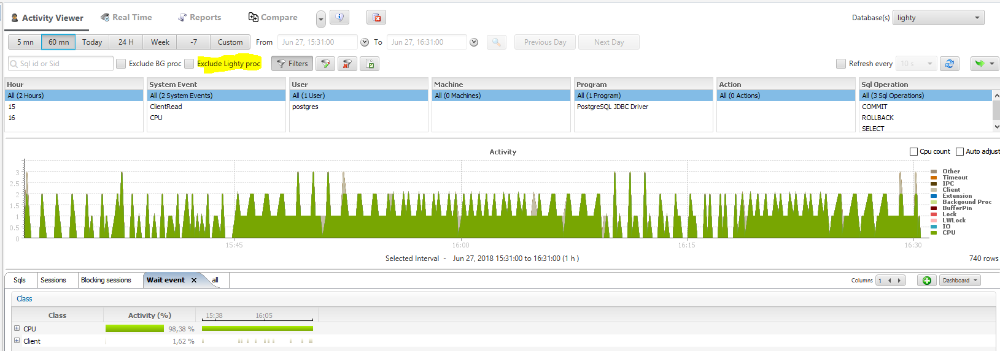
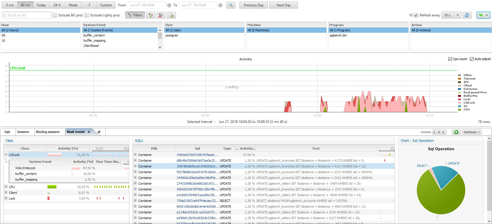
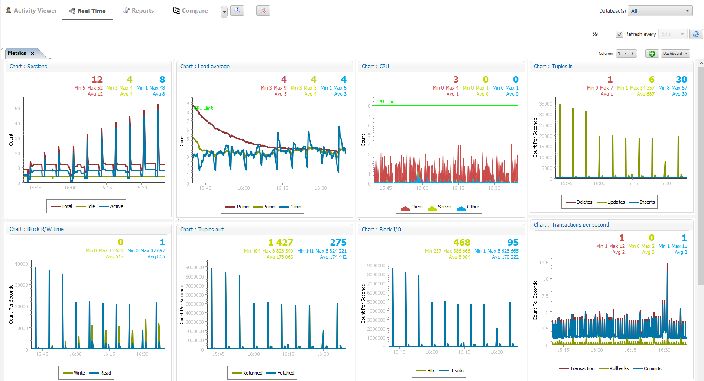

This was first published on https://www.dbi-services.com/blog/lighty-for-postgresql/ (2018-06-27)
Republishing here for new followers. The content is related to the versions available at the publication date.
.
If you follow this blog, you should know how I like Orachrome Lighty for Oracle, for its efficiency to monitor database performance statistics. Today Orachrome released the beta version of Lighty for Postgres: https://orachrome.com/news/la-beta-de-lighty-for-postgresql-est-ouverte/
The Cloud is perfect to do short tests with more resources than my laptop, especially the predictability of performance, then I started a Bitnami Postgres Compute service on the Oracle Cloud and did some tests with pgbench and pgio.
The installation is easy:
In the beta I tested, the sampling job was running from cronjob in Linux and a service on Windows but as far as I know this will run as a service on Linux as well.
The sampling service takes a sample of pg_stat_activity every 10 seconds, and gathers more details about sessions and statements. It stores its data in a ‘lighty’ database created by the initialization script (you provide the tablespace name that you should create before) The overhead is very small.
In my Oracle Cloud Bitnami environment I’ve added the following to the script called by crontab:
export PGPASSWORD=myPostgresPassword
export PATH=$PATH:/opt/bitnami/postgresql/bin

In my opinion, we should just ignore this activity and there’s an option to check “Exclude Lighty proc” to hide this from the ‘all databases’ view.
The main screen is the Activity Viewer where you can see graphically the samples from the postgres waits class and CPU as well as some details on the top level SQL statements, the wait events, the sessions,… We have to enable the pg_stat_statements extension for that:
# to add in postgresql.conf after installing postgresql10-contrib
shared_preload_libraries = 'pg_stat_statements'
pg_stat_statements.track = all
Here is how it looks like: 
Another important screen is the ‘real time’ performance views displayed as graphs, with information from the database as well as from the host operating system. There’s one non-defautl setting to get the full picture:
# to add in postgresql.conf to get Block R/W time
track_io_timing=on
Here is how it looks like: 
As with Lighty for Oracle, there’s also a bunch of reports and a multi-database view which shows the main performance indicators (transactions per seconds, Block I/O, Tuples in/out, CPU and OS load average) for several databases on the same screen.
Of course, if you compare it with Lighty for Oracle, you will see some limitations. Not because of the tool but because of the statistics provided. Oracle has detailed wait events. They are more limited in postgres. Oracle has all information about what the current sessions are doing, in V$SESSION, and have even more information on V$ACTIVE_SESSION_HISTORY if you have Diagnostic Pack. In Postgres, PG_STAT_ACTIVITY is much more limited. And Lighty shows only what is available by default (and with the pg_stat_statements extension).
{kind=link}
{kind=link}
{kind=link}